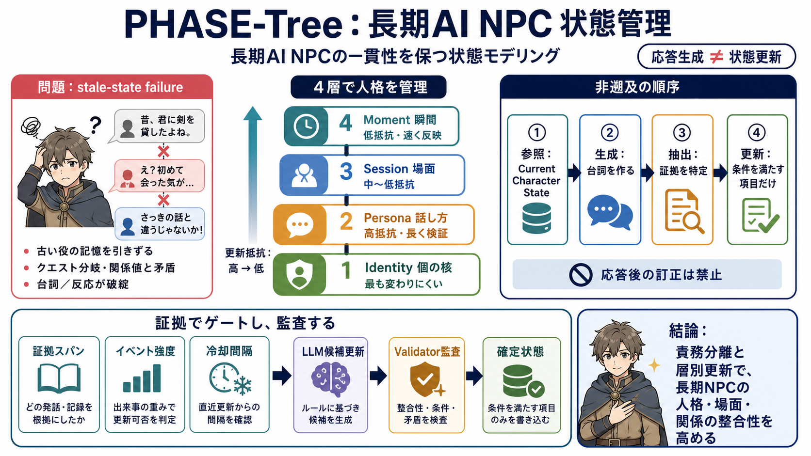

Cover
02 / 14
Long-lived NPC を“整合”で作る
PHASE-
Tree
長期に同じ人格（キャラクター性）を保つAI NPCを、状態モデリングで矛盾なく動かすための設計思想です。
核心（Idea）
応答生成と状態更新を分離
要点（Flow）
確定状態 → 応答 → 証拠で更新
EN/JP：State modeling / 状態モデリング
NPC consistency
Problem
03 / 14
stale-state failure
古い“役の記憶”
会話生成が直前テキストに引きずられると、クエスト分岐や関係の整合が崩れ、“古い状態（stale-state）”で応答します。
何が起きる？
RAGが正しい出来事を拾っても、過去の態度を参照してしまう
結果（症状）
矛盾する台詞／反応の破綻（例：第1章の印象を引きずる）
EN：stale-state / JP：古い状態
Dialogue System
Metaphor
04 / 14
人格を“階層”で管理
4層の骨格
人格心理学の区別にもとづき、Persona / Session / Moment / Identity を分け、更新速度を変えて矛盾を抑えます。
Identity（個の核）
最も変わりにくい
Persona（話し方）
高抵抗：検証期間が長い
Session/Moment（場）
低抵抗：速く反映
EN：update resistance / JP：更新抵抗
Consistency by cadence
Architecture
05 / 14
生成前に“固定”
非遡及の順序
「キャラクターは現在状態で応答する」→「応答後に証拠を抽出」→「次状態を更新」へ、遡らない順序を固定します。
i
参照：確定された
Current Character State
のみ
ii
生成：台詞を作る（この時点で状態は変更しない）
iii
抽出：証拠（何が起きたか／どの範囲か）を特定
iv
更新：証拠条件を満たしたフィールドだけ状態遷移
EN：no rewrite after output / JP：応答後の訂正を禁止
stale-state mitigation
Process
06 / 14
更新は条件で“段階化”
証拠でゲート
状態更新の可否を、証拠スパン・イベント強度・冷却間隔で分けます。根拠が弱いと更新は据え置きになります。
証拠スパン（Evidence span）
十分な期間の出来事が必要
イベント強度（Event strength）
小さな出来事は人格骨格を揺らさない
冷却間隔（Cooling interval）
連続反映を抑え、矛盾を遅延吸収
更新方針
高抵抗（性格・話し方）は長検証、低抵抗（場のムード）は即反映
EN：candidate update gating / JP：更新ゲーティング
LLM → rules
Evidence
07 / 14
“候補”と“確定”を分ける
決定的校閲器
LLMは候補更新を出し、決定的な校閲器（deterministic validator）が証拠番号・スパン・条件を検査して確定します。
LLM（提案）
フィールド更新案を作る（例：Personaの一部タグ）
Validator（監査）
条件未達なら書き換えない→モデルの揺れを抑制
EN：auditability / JP：監査可能性
evidence-id → fields
Comparison
08 / 14
“ただの会話”との差
更新責務の隔離
PHASE-Treeは、台詞生成と状態更新を責務分離し、後から整合しようとする書き換えを抑えます。
従来（がち）
直前コンテキストから推測し、過去の態度を引きずりやすい
PHASE-Tree
生成は確定状態のみ参照。応答後に証拠→更新
従来（リスク）
stale-state failure／矛盾台詞の増加
PHASE-Tree（対策）
更新条件と校閲で誤更新を減らす
EN：responsibility separation / JP：責務分離
generation ≠ mutation
Enumeration
09 / 14
生成に効く入力信号
同時に効くもの
NPC台詞には、Quest Flag・Relationship Value・長期記憶・Persona（話し方）など複数の信号が同時に影響します。
Quest Flag
分岐（どこまで来たか）を固定
Relationship Value
関係段階（距離感）を反映
長期記憶（Common experiences）
共通の出来事を参照
Persona（話し方）
言葉遣い・反応テンプレを安定化
最重要（前提）
Current Character State
が欠けると誤った整合で生成
PHASE-Treeの役割
状態を4層に分け、更新頻度で整合性を上げる
EN/JP：Relationship / 関係値
signals → state → dialogue
Evidence
10 / 14
評価は“役の一致”
LongEvoRoleBench
LongEvoRoleBenchで、役（role）一致や場面連続性などを測定し、長期Personaや場面情報が次の台詞生成に効くことを示しています。
指標
役の一致（role match）／場面連続性（scene continuity）
アブレーション
長期Persona・現在場面情報・即時の情緒の寄与を切り分け
Key takeaway
適切な層分離（4層）と更新順序が、長期の一貫性を押し上げる。
EN：ablation / JP：要因切り分け
consistency metrics
Architecture
11 / 14
PHASE-Tree を外部基盤へ
MemOS Cloud 接続
PHASE-Treeの状態管理を、MemOS Cloudの構造化属性記憶（作成・更新・検索）に接続し、ゲーム外部の永続性へ橋渡しします。
PHASE-Tree（設計）
Persona/Session/Moment/Identityを更新条件付きで遷移
MemOS Cloud（運用）
テンプレート化されたスキーマで属性状態を管理
統合ポイント
Quest/関係値/台詞生成と組み合わせ、参照可能にする
実装結果
状態の永続性と参照性が得られる
EN：structured attributes / JP：構造化属性
API → persistent state
Distinction
12 / 14
強みと限界（懐疑）
数値は“粒度依存”
更新閾値や証拠スパンなどはゲームのイベント粒度に依存します。また、証拠抽出自体が誤れば効果は落ちます。
強み（Safety）
確定校閲器で条件未達なら書き換えない
限界（Thresholds）
“証拠スパン16ユニット”のような値は別粒度で再調整が必要
限界（Evidence extraction）
証拠抽出が誤る可能性は残る（抽出プロンプト/ログ粒度が肝）
導入責任（Ops）
最終的にゲーム側の
Current Character State
構築が成否を決める
EN：risk / JP：リスク
tune to your event design
Closing
13 / 14
実装チェックリスト
次の一歩
PHASE-Treeは“長期一致”に筋の良い枠組みです。導入時は証拠粒度・スキーマ対応・抽出品質・運用コストを追加で確認しましょう。
i
証拠の粒度設計（ログ/イベント切り方）
ii
Relationship Value→Persona 等のマッピング（フィールド対応表）
iii
証拠抽出の誤り対策（監査・プロンプト・アノテーション）
iv
運用コスト評価（リアルタイム更新・検索・検証）
EN：mapping & validation / JP：対応と検証
PHASE-Tree + MemOS Cloud
REFERENCES
14 / 14
References
No references found